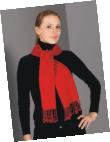

“Pashmina é o nome do fio usado para tecer uma blusa, um cobertor, uma manta ou um xale - tornando-se um “sinônimo” no Ocidente para esses últimos. Não confunda pashmina com cashmere. Essa, originária da Cachemira (Índia), possui uma textura mais grossa e mais áspera.
A pashmina é peça indispensável no inverno, mas há que se saber usar, como toda peça sofisticada.
A pashmina tem a trama extremamente fina e antigamente era de uso exclusivo dos nobres.
Hoje, um xale de pashmina é vendido entre US$50 a US$ 1.000 e existem tipos, segundo Catmando’s Shoppe Craft:
a) 140 NM/2 seda com Pashmina: 45% pashmina e 65% seda.
b) 210 NM/2 seda com Pashmina: 60% pashmina e 40% seda.
c) 100% pashmina.
Adquirindo um xale, tenha cuidados ao guarda-lo:
- guarde-o enrolado;
- mande lavar a seco;
- se lavar em casa, lave à mão em água morna para fria, com xampu natural e orgânico para cabelos com PH baixo;
- para secar, torça delicadamente com auxílio de uma toalha felpuda, estenda-o e deixe secar sobre uma superfície plana, em área ventilada;
- use uma escova bem macia para escová-lo, na direção das fibras;
- passe com leveza com um ferro a vapor.
As cores disponíveis são diversas e lindas! Veja modelos, cores e formas de usar no site Pashmina Boutique Jewels
Adaptado de MODA BRASIL: Força da Moda - "Pashmina, um conforto
para o inverno", de Patrícia Douat Garcia.